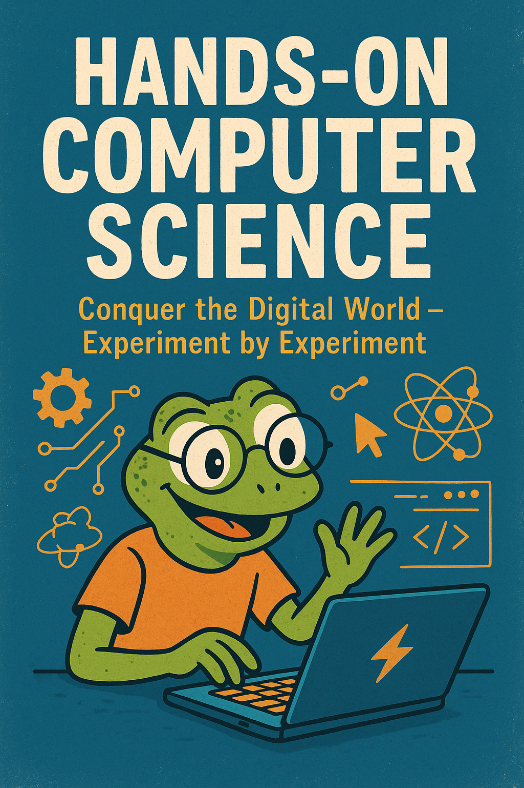

- 1
- Schaltet die LED aus, weil der RGB-Code (0, 0, 0) die Farbe Schwarz ergibt.
- 2
- Schaltet die LED auf weißes Licht, weil dreimal 255 die Farbe Weiß ergibt.
- 3
- Auch Kommentare sind für kurze Erläuterungen nützlich.
Hands-On Computer Science
Ein Online-Buch mit Hardware-Experimenten, das Schritt für Schritt in die Welt der Digitalisierung einführt.
Vorwort

Glückwunsch, ihr seid angekommen! Egal, wie euer Weg hierher aussah: Ihr habt dieses Buch geöffnet – und damit den ersten Schritt getan. Vielleicht studiert ihr an der Hochschule Osnabrück und seid im Modul dabei, vielleicht seid ihr aus Neugier hier. So oder so: Willkommen!
Dieses Buch ist aus meiner Lehrpraxis an der Hochschule Osnabrück entstanden. Es dient als Hauptlektüre in meinen Veranstaltungen, als Nachschlagewerk für verpasste Sitzungen und als kompakte, praxisnahe Einführung für alle, die sich eigenständig in die digitale Welt einarbeiten wollen. Die wissenschaftliche Disziplin dahinter heißt auf Deutsch Informatik, international Computer Science. Der Titel Hands-On Computer Science verrät schon den Ansatz: Wir lernen praktisch – von Anfang an.
Für wen ist dieses Buch gedacht?
Lehrbücher zur Informatik gibt es viele. Doch nicht jedes passt zu dem, was ich mit meinen Studierenden erreichen möchte. Meine Zielgruppe seid ihr:
- Studierende aus Studiengängen wie Management nachhaltiger Ernährungssysteme, Lebensmittelproduktion oder Agrarsystemtechnologien.
- Quereinsteiger:innen, Wiederholer:innen und neugierige Menschen – auch ohne Bezug zur Hochschule Osnabrück.
Kurz gesagt: Dieses Buch ist für alle, die in die digitale Welt eintauchen wollen, ohne sich in Details zu verlieren. Ihr braucht keinen dicken Wälzer, sondern einen roten Faden, der euch Schritt für Schritt zu den grundlegenden Konzepten führt – mit Spaß und Erfolgserlebnissen.
Was macht dieses Buch anders?
Viele Bücher versprechen Praxisnähe, enden aber in abstrakten Übungen am Kapitelende. Hier gehen wir es anders an:
- Ihr entdeckt informatische Konzepte über Experimente mit Microcontrollern, Sensoren, Buttons, LEDs und Displays.
- Wichtige Ideen führen wir früh ein, vertiefen sie nach und nach und wiederholen sie regelmäßig.
- Theorie und Praxis gehören zusammen: Ihr lernt Programmieren und Informatik-Grundlagen gleichzeitig.
So lernen wir: Hands-on von Anfang an
Habt ihr euch schon einmal gefragt, wie man Informationen mit Licht überträgt? Wie man mit Licht den Puls messen kann? Oder wie man mit zwei einfachen Kabeln einen Wasserstandssensor baut? Genau solche Fragen beantworten wir – nicht nur theoretisch, sondern praktisch.
In jedem Kapitel erproben wir ein neues Experiment und lernen dabei eine Facette der digitalen Welt kennen. Gleichzeitig wächst euer Programmierwissen organisch mit. Wenn alles gut läuft, merkt ihr kaum, wie schnell ihr vorankommt.
Experimente im Überblick
Kapitel für Kapitel arbeitet ihr an Experimenten, die Hardware und Software verbinden. Dabei geht es um mehr als das Zusammenschrauben von Komponenten: Ihr lernt, Computer als universelle Problemlösungsmaschinen zu nutzen – für eure eigenen Ideen.
| Kapitel | Experiment(e) |
|---|---|
| 1 Farben | Wir lassen eine LED einen Regenbogenfarbverlauf über die Zeit erzeugen. |
| 2 Zahlen | Wir entwickeln einen Dimmer für die LED, der über einen Drehknopf gesteuert wird. |
| 3 Texte | Wir lernen, wie man Texte ganz ohne Tastatur eingeben kann – über Handgesten. |
| 4 Bilder | Wir verbinden Tabellenkalkulation mit Bildern und Displays |
Die Hardware: unser Experimentier‑Set
Hier seht ihr die Geräte, mit denen wir experimentieren. Zusammen kosten alle Komponenten ca. 249 €. Keine Sorge: Wenn ihr dieses Buch im Rahmen meines Moduls „Digitalisierung und Programmierung“ an der Hochschule Osnabrück nutzt, erhaltet ihr für die Zeit des Semesters ein komplettes Hardware‑Kit kostenlos.
| Was? | Bauteil | Anzahl | Preis pro Stück |
|---|---|---|---|
| Bunte LED | RGB LED Bricklet 2.0 | 1 | 8 € |
| Drehknopf mit Zählerfunktion | Rotary Encoder Bricklet | 1 | 8 € |
| Infrarot-Entfernungsmesser | Distance IR 4-30cm Bricklet 2.0 | 1 | 20 € |
| OLED Display | OLED 128x64 Bricklet | 1 | 25 € |
| Button mit integrierter, bunter LED | RGB LED Button Bricklet | 1 | 15 € |
| Licht- und Farbsensor | Color Bricklet 2.0 | 1 | 17 € |
| Piezo Lautsprecher | Piezo Speaker Bricklet 2.0 | 1 | 19 € |
| Analoger Spannungssensor | Analog In Bricklet 3.0 | 1 | 14 € |
| Schalldruckpegelsensor | Sound Pressure Level Bricklet | 1 | 35 € |
| Mikrocontroller | Master Brick 3.2 | 2 | 35 € |
| Anschlusskabel 15 cm | Bricklet Kabel 15cm (7p-7p) | 8 | 1 € |
| USB-A-auf-USB-C-Kabel | USB-A auf USB-C Kabel 100 cm | 1 | 6 € |
| Montageplatte | Montageplatte 22x22 (12x12cm) | 2 | 7 € |
| Schrauben, Abstandshalter und Muttern | Befestigungskit 12mm | 4 | 2 € |
So nutzt ihr dieses Buch am besten
Weil es hier viel ums Programmieren geht, findet ihr zahlreiche Codebeispiele. Wir verwenden als Einstiegssprache Python. Warum Python? Weil es in der Praxis weit verbreitet ist, eine klare, leicht lesbare Syntax hat und viele nützliche Bibliotheken den Einstieg erleichtern.
Codeblöcke sind im Text deutlich abgesetzt (grau hinterlegt, Schreibmaschinenschrift). Ein Beispiel mit Annotationen:
Wenn ihr das Buch online lest, erscheinen zu den kleinen Ziffern im Code beim Darüberfahren Tooltips mit Erklärungen. In der PDF- oder Druckversion stehen die Erläuterungen unter dem Codeblock.
Damit der Fokus beim schrittweisen Entwickeln auf den neuen Teilen liegt, lasse ich gelegentlich Abschnitte im Code aus und markiere das mit drei Punkten (...). Den vollständigen Code findet ihr am Ende eines Abschnitts und im GitHub‑Repository zum Buch:
https://github.com/winf-hsos/hands-on-computer-science-code
Noch ein Tipp: Wenn ihr mit der Maus über einen Codeblock fahrt, erscheint rechts oben ein Clipboard‑Symbol. Ein Klick darauf kopiert den Code in eure Zwischenablage – ideal, um ihn in Visual Studio Code oder eine andere IDE einzufügen. In der Online‑Version lassen sich manche Codeblöcke einklappen, damit ihr weniger scrollen müsst.
Fehler als Lernmotor: Frust gehört dazu
Eins vorweg: Beim Programmierenlernen ist Frust normal – und nützlich. Computer sind präzise, gnadenlose Lehrer. Ein vergessener Punkt, ein Buchstabe zu viel, ein Zahlendreher: Sofort gibt es Feedback. Das kann nerven, beschleunigt aber euren Lernprozess enorm. Sobald ihr Fehlermeldungen als Hinweise versteht und gezielt damit umgeht, kommen die Erfolgserlebnisse schnell.
Wenn etwas nicht klappt: Atmet durch, nehmt es nicht persönlich und versucht es erneut. Fehler sind unvermeidbar – und wichtig. Es lohnt sich!
Empfehlenswerte Bücher
Auch wenn dieses Buch einen eigenen Weg geht, haben mich andere Werke inspiriert:
- Code: The Hidden Language of Computer Hardware and Software von Charles Petzold: Ein Klassiker, der von einfachen Konzepten schrittweise zu komplexeren Themen führt – bis ihr gedanklich einen Computer nachgebaut habt.
- Abenteuer Informatik von Jens Gallenbacher.
- Computer Science: An Overview von J. Glenn Brookshear und Dennis Brylow: Ein umfassendes Lehrbuch mit breitem Überblick und klarer Struktur.
- The Way Things Work von David Macaulay: Erklärt Technologien unterhaltsam. Der Teil „The Digital Domain“ mit den Abschnitten „Making Bits“, „Storing Bits“, „Processing Bits“ und „Sending Bits“ hat die Struktur dieses Buches beeinflusst.
Auf geht’s
Alles klar? Dann machen wir uns startklar für die Experimente! Dazu müssen wir ein paar Dinge auf unserem Rechner installieren.